Paleta de cores
Medida no navegador: fundos ponderados pela área ocupada, textos pela quantidade de caracteres. Destaques reúnem cores saturadas e fundos de botão.
Fundos
rgb(245, 240, 225)
rgb(255, 253, 247)
rgb(17, 16, 16)
rgb(234, 226, 204)
rgb(0, 0, 0)
rgb(230, 189, 33)
Textos
rgb(17, 16, 16)
rgb(0, 0, 0)
rgb(110, 100, 85)
rgb(245, 240, 225)
rgb(230, 189, 33)
Destaques
rgb(17, 16, 16)
rgb(230, 189, 33)
rgb(234, 226, 204)
Gradientes
linear-gradient(92deg, rgb(230, 189, 33) 0%, rgb(255, 226, 116) 100%)Tipografia
Escala usada (desktop 1440px)
| Tamanho | Peso | Família | Amostra |
|---|---|---|---|
| 55px | 700 | Montserrat | Texto de exemplo |
| 44px | 700 | Montserrat | Texto de exemplo |
| 41px | 700 | Montserrat | Texto de exemplo |
| 40px | 700 | Montserrat | Texto de exemplo |
| 34px | 700 | Montserrat | Texto de exemplo |
| 24px | 600 | Montserrat | Texto de exemplo |
| 21px | 700 | Montserrat | Texto de exemplo |
| 18px | 700 | Montserrat | Texto de exemplo |
| 18px | 400 | Archivo | Texto de exemplo |
| 18px | 600 | Oswald | Texto de exemplo |
Mobile (390px): 26px/700, 25px/700, 24px/600, 24px/700, 21px/700, 18px/700, 18px/400, 18px/600 · H1 no mobile: 30.81px
Tags
| Tag | Família | Tamanho | Peso | Altura de linha | Espaçamento | Caixa | Cor |
|---|---|---|---|---|---|---|---|
| <h1> | Montserrat | 55px | 700 | 66px | -1.5px | none | #F5F0E1 |
| <h2> | Montserrat | 40px | 700 | 48px | -0.5px | none | #000000 |
| <h3> | Montserrat | 18px | 700 | 21.6px | normal | uppercase | #111010 |
| <p> | Archivo | 16px | 400 | 27.2px | normal | none | #111010 |
Botões
Recriados com os estilos computados reais. Efeitos de hover e animação não aparecem aqui; veja a seção de animações.
fundo #111010 · texto #E6BD21 · raio 6px · padding 14px 30px · 18px/600 uppercase · 3x na páginafundo #E6BD21 · texto #111010 · raio 2px · padding 14px 30px · 18px/600 uppercase · 2x na páginafundo #00000000 · texto #F5F0E1 · raio 2px · padding 14px 30px · 18px/600 uppercase · 2x na páginafundo #111010 · texto #E6BD21 · raio 6px · padding 9px 20px · 13.76px/600 uppercase · 1x na páginafundo #111010 · texto #E6BD21 · raio 6px · padding 14px 30px · 15.68px/600 uppercase · 1x na páginaCards e containers
MAIS PEDIDO BOLINHO DE CARNE Receita tradicional transmitida de pai para filho. O prato qu
raio 8px · sombra none · borda 1px solid rgba(17, 16, 16, 0.12) · 283x337pxVISTA PRIVILEGIADA A Igreja de Santa Tereza emoldura a vista de quem senta na frente.
raio 8px · sombra none · borda 1px solid rgba(17, 16, 16, 0.12) · 278x242pxMESAS NA PRAÇA O bar transborda para a calçada e a praça vira parte do salão.
raio 3px · sombra none · borda 1px solid rgba(17, 16, 16, 0.12) · 287x242pxHORÁRIO DE FUNCIONAMENTO QUA A SEX 17h às 00h SÁBADO 11h às 01h DOMINGO 11h às 22h R. Márm
raio 8px · sombra none · borda 1px solid rgba(17, 16, 16, 0.12) · 508x343pxBordas, raios e sombras
Sombras
rgba(0, 0, 0, 0.39) 20px 20px 34px 0pxEspaçamentos
- Largura do conteúdo mais comum: 1240px
- Padding vertical das seções (topo/base): 0px/0px (10x), 50px/50px (1x)
- Gaps mais usados (flex/grid): 12px, 20px, 10px, 26px, 5px, 9px
- Altura total da página: 8420px em 11 seções
Estrutura e ritmo de cores das seções
Cada faixa é uma seção de topo, com altura proporcional e a cor ou imagem de fundo real.
Animações, ícones e bibliotecas
- Keyframes próprios: nenhum keyframe próprio
- Animações de entrada do Elementor: nenhuma
- Classes de scroll reveal da casa: scroll-bottom, scroll-left, scroll-right, scroll-top
- Ícones: 16 SVG, 0 ícones de fonte
- Bibliotecas e tags detectadas: ga4, google-ads, happy-addons, jquery, lenis, lottie, meta-pixel, swiper
Snippets da biblioteca presentes nesta página
- Animação de entrada no scroll (scroll-left/right/top/bottom)
- Animação de entrada no scroll com blur
- Vidro fosco (backdrop blur)
- Menu com drawer lateral no celular (Santa Boemia)
- Link de WhatsApp com mensagem pronta
- Pixel da Meta (Facebook)
- Tag do Google Ads (gtag)
- CSS base de toda página (o que sempre uso)
- Elemento solto (posição absoluta)
Imagens do site
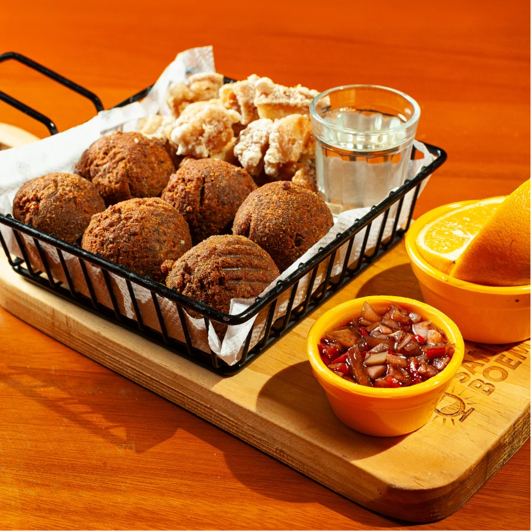
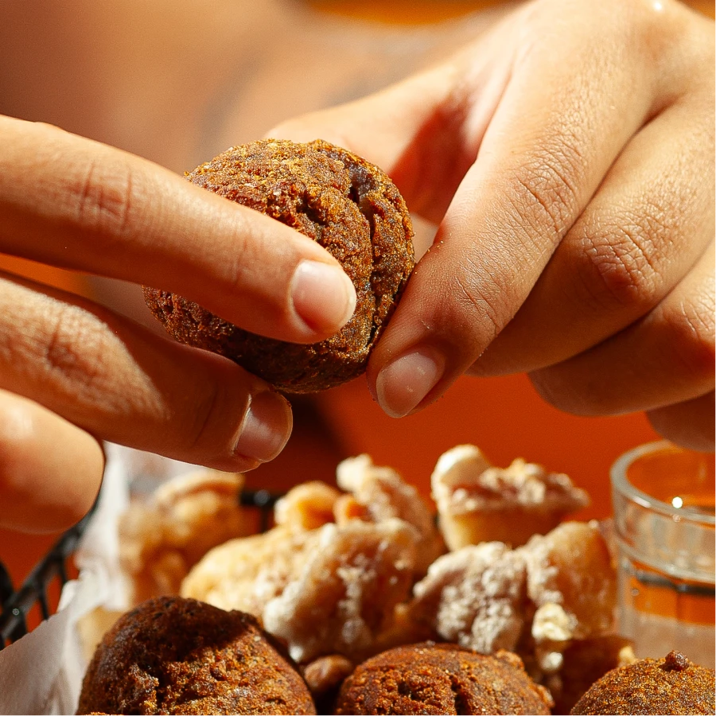
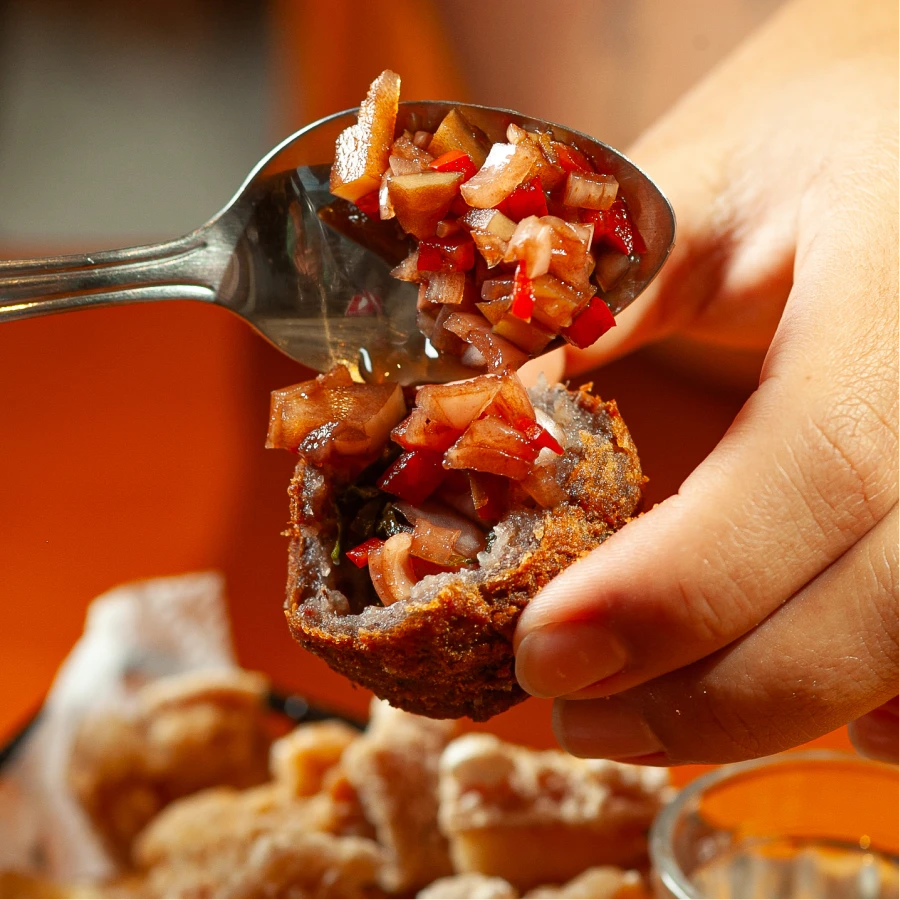
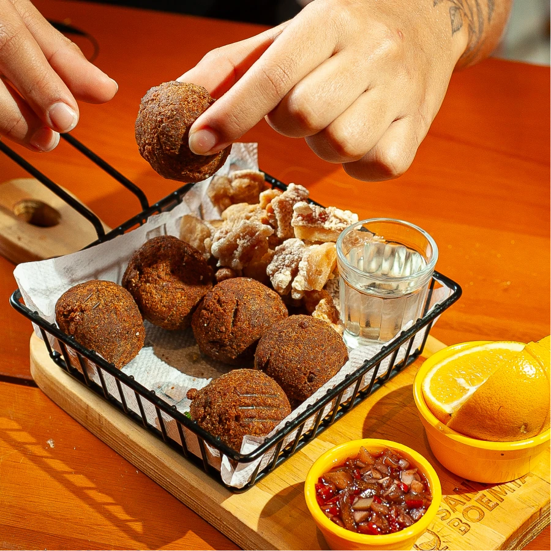
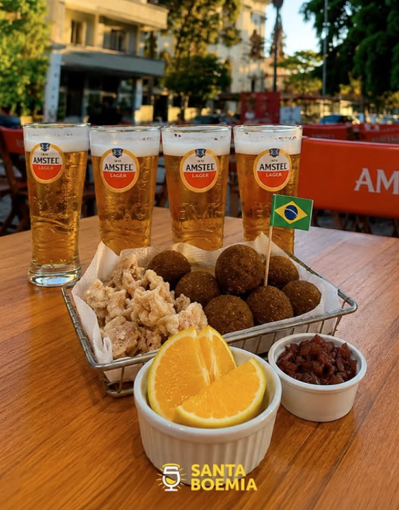
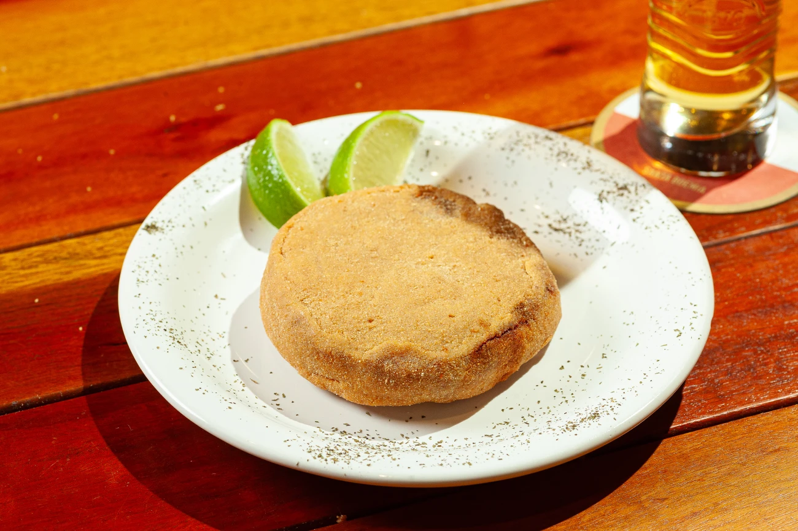
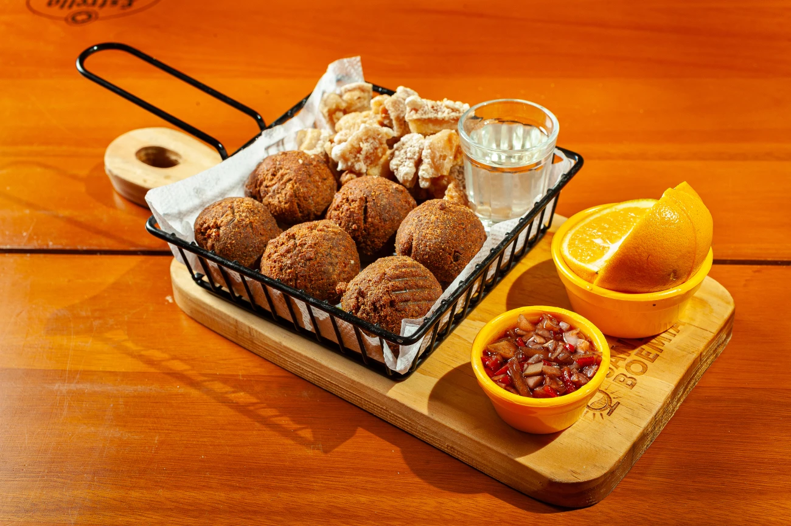
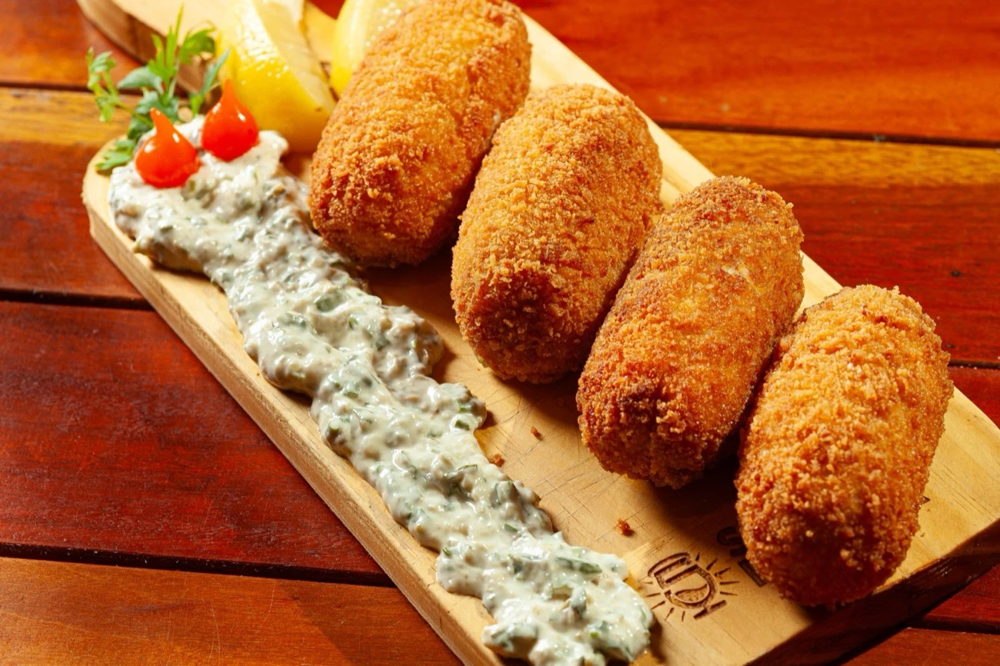
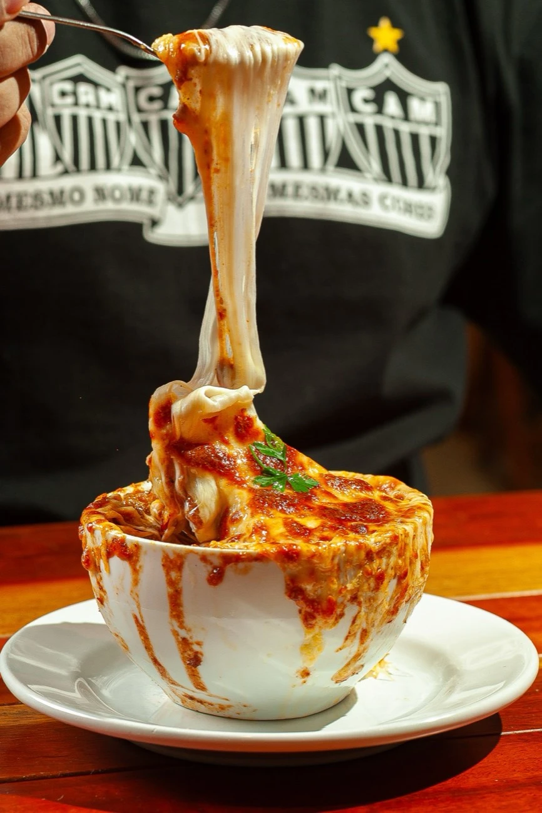
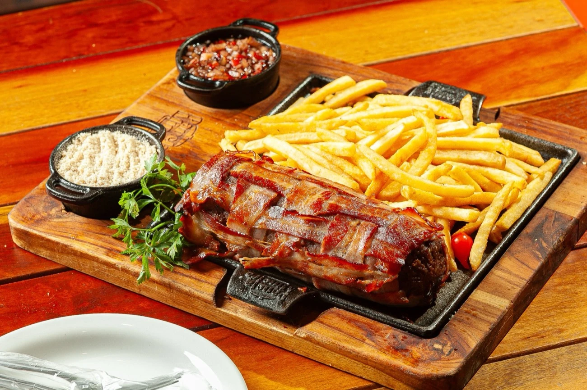
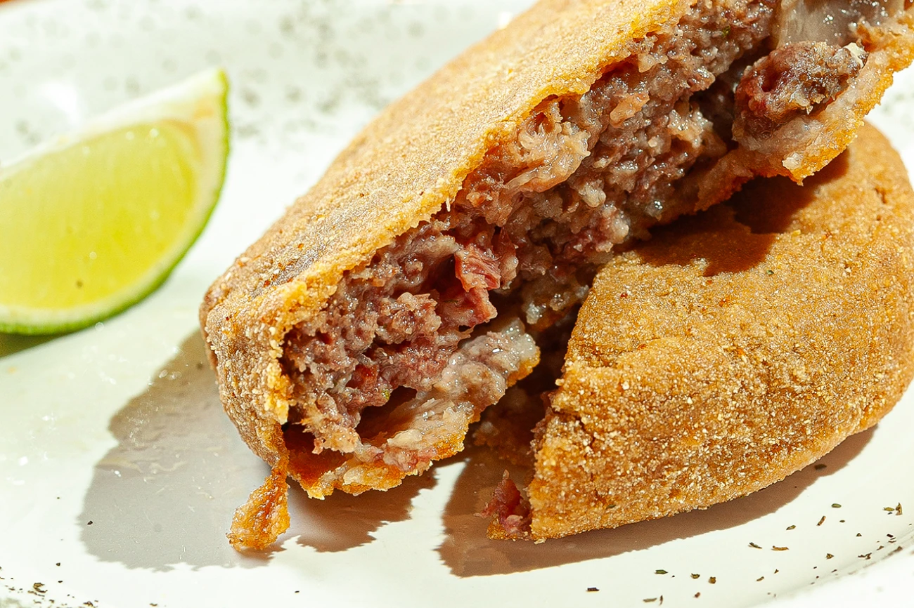